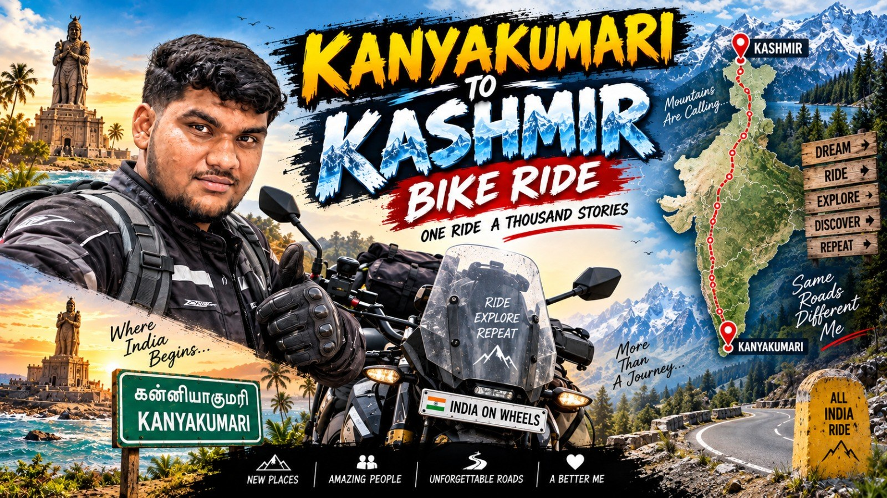

Video & storytelling
Short & long-form editing, storyboarding, YouTube, Reels, Shorts, and content structuring.
Video editor. Graphic designer.
Motion graphics & AI creative.
I turn footage, ideas, and brand stories into visuals that move people—and make them pause.

STORIES THAT MOVE YOU ↗01 / IN MOTION
Press play. See the work in motion.
02 / BEYOND THE FRAME
From the first impression to the final detail.
03 / THE PERSON BEHIND THE PIXELS
I’m Shaik Muzafar, a Video Editor and Graphic Designer based in Bengaluru, India, with 1.5+ years of professional experience.
My work spans short-form and long-form video, social campaigns, advertising creatives, motion graphics, and brand visuals. From storyboarding to color grading and sound design, I bring the whole story together.
I also use AI-powered creative tools to develop images, video elements, and fresh visual concepts.
Audisankara Engineering College
2020–2024
AIML Labs Pvt Ltd
04 / THE CREATIVE TOOLKIT
A complete workflow, from concept to final cut.
Short & long-form editing, storyboarding, YouTube, Reels, Shorts, and content structuring.
Motion graphics, kinetic typography, visual effects, animated titles, intros, and outros.
Thumbnails, posters, campaign creatives, typography, layout, and social media design.
Color grading, sound design, captions, AI image and video generation, and creative workflows.
Premiere Pro
After Effects
Photoshop
Filmora
CapCut
Canva
VN
ChatGPT
Gemini AI
ElevenLabs
05 / SELECTED PROJECT EXPERIENCE
Long-form educational video editing from raw footage to delivery, with storyboards, motion graphics, subtitles, audio enhancement, and a consistent visual identity.
FILMORA · PREMIERE PRO · AFTER EFFECTSPromotional graphics and short-form videos with creative transitions, captions, animation, and AI-assisted assets, tailored to campaign goals.
CAPCUT · CANVA · PHOTOSHOP · AI TOOLSPromotional and performance-marketing creatives with engaging hooks, sound design, branding, and platform-specific exports for Meta, Instagram, and YouTube.
PREMIERE PRO · AFTER EFFECTS · PHOTOSHOPLET’S CREATE SOMETHING
Bengaluru, India